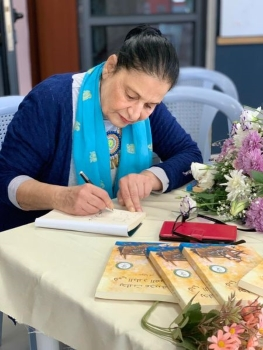

Sonia Nimr
Weaving Tales of Wonder
Step into a world where every tale dances to life
“When I was six years old, our neighbor” Um Ibrahim” said to me: “In my days the penny talked”. A Talking penny? Wow, this made my imagination go Wilde, I imagined a penny with a mouth, eyes and a human face. What did it say? And how? She didn’t say, but I totally believed her, after all, if walls have ears so it’s quite natural for pennies to talk.”
